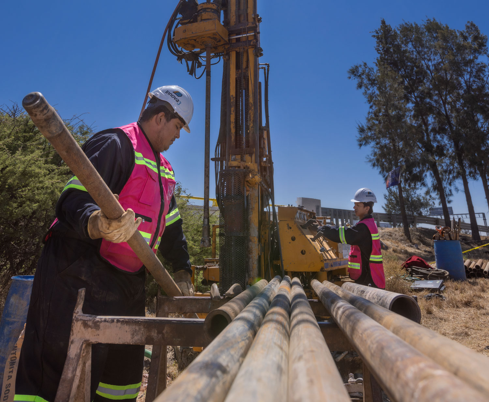
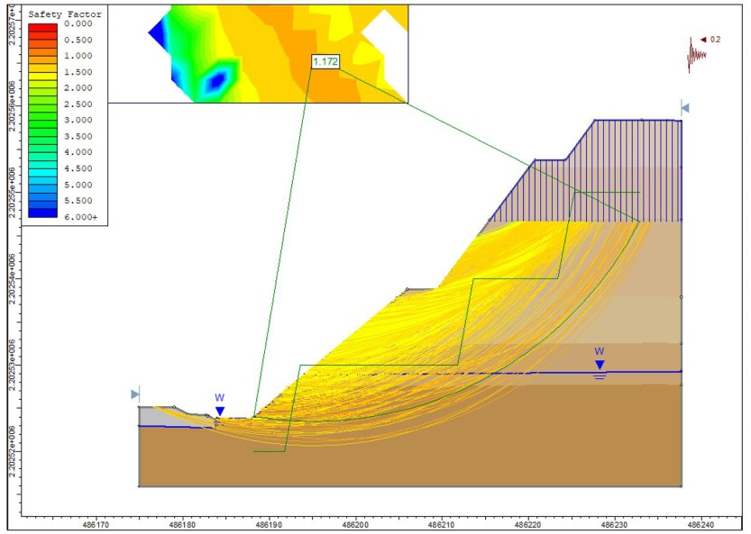

ESTRUCTURA DE UN PROYECTO EJECUTIVO
Todo proyecto ejecutivo se entrega con un juego completo de documentos técnicos necesarios para la construcción.

Todo proyecto ejecutivo se entrega con un juego completo de documentos técnicos necesarios para la construcción.

Reúne el levantamiento topográfico (altimetría, planimetría y, en tramos extensos, fotogrametría) para definir el relieve real del trazo; sobre esa base se realiza el alineamiento horizontal y vertical, se calculan los volúmenes de corte y terraplen, ademas se diseñan las secciones transversales, el sistema de drenaje y la estructura de pavimento.
Los análisis de suelos (pruebas índice, triaxial, consolidación) determinan la capacidad de soporte de la subrasante y las propiedades de los materiales de corte, mientras que los análisis de roca se emplean cuando el trazado atraviesa cortes en macizo rocoso.
El resultado es un juego de planos y especificaciones que son el marco de referencia para la construcción, control de calidad y la supervisión durante toda la construcción.
Este tipo de proyecto parte de un levantamiento altimétrico y planimétrico del talud (apoyado en fotogrametría cuando el acceso es limitado) para construir un modelo geométrico del mismo.
Con los análisis de suelos y de rocas (resistencia al corte, cohesión, ángulo de fricción, resistencia a compresión y tracción de la roca) se definen las propiedades mecánicas de los materiales, con ellas se modela la superficie de falla más crítica y se calcula el factor de seguridad.
Posteriormente con los resultados se diseñan las medidas de estabilización —bermas, drenaje superficial y subterráneo, anclajes, muros o revegetación— y se define el monitoreo posterior, apoyado en fotogrametría periódica u otros instrumentos.

Este tipo de proyecto parte de un levantamiento altimétrico y planimétrico del talud (apoyado en fotogrametría cuando el acceso es limitado) para construir un modelo geométrico del mismo.
Con los análisis de suelos y de rocas (resistencia al corte, cohesión, ángulo de fricción, resistencia a compresión y tracción de la roca) se definen las propiedades mecánicas de los materiales, con ellas se modela la superficie de falla más crítica y se calcula el factor de seguridad.
Posteriormente con los resultados se diseñan las medidas de estabilización —bermas, drenaje superficial y subterráneo, anclajes, muros o revegetación— y se define el monitoreo posterior, apoyado en fotogrametría periódica u otros instrumentos.
El diseño de una red de drenaje de este tipo se apoya en la altimetría del terreno para definir las pendientes naturales, las cuencas de aporte y las redes de escorrentía, y en la planimetría para ubicar con precisión estructuras existentes, vías y predios que condicionan el trazado de la red.
Con esa información se dimensionan cunetas, alcantarillas, tuberías, pozos y estructuras de descarga, verificando que la capacidad hidráulica sea suficiente para los caudales de diseño.
Los estudios de suelos definen las condiciones de excavación y de fundación de las estructuras de la red, y una vez construida, la altimetría y planimetría permiten verificar en campo que las pendientes y niveles ejecutados garanticen el flujo por gravedad previsto en el diseño.
El diseño de una red de drenaje sanitario parte de la altimetría del terreno para definir pendientes que garanticen el flujo por gravedad y la velocidad autolimpiante en cada tramo de tubería, para evitar sedimentación u obstrucciones.
La planimetría ubica con precisión las conexiones domiciliarias, los pozos de visita y el trazo de la red respecto a las edificaciones, vías y otras instalaciones existentes. Los estudios de suelos aportan las condiciones de excavación, el nivel freático y las características del material de cama y relleno para el tendido de la tubería.
Con esta información se dimensionan los diámetros y pendientes según el caudal de diseño, se ubican los pozos de visita en cada cambio de dirección o pendiente, y se define el punto de conexión al sistema municipal o a la planta de tratamiento, con esto se definen los criterios de control de calidad para la instalación y prueba de la tubería en obra.
El diseño de cimentaciones se basa principalmente en los análisis de suelos: las pruebas índice, el ensaye triaxial y la consolidación unidimensional permiten conocer la capacidad de carga admisible y el potencial de asentamiento del terreno; cuando la cimentación se apoya sobre roca, los ensayos de compresión simple, módulo elástico y carga puntual entregan los parámetros de resistencia y rigidez necesarios.
La altimetría y planimetría del sitio definen los niveles de desplante y la ubicación exacta de cada elemento estructural.
Con estos resultados se selecciona el tipo de cimentación (superficial o profunda), se dimensiona y se establecen los criterios de control de calidad y supervisión que deben verificarse durante la excavación y construcción.